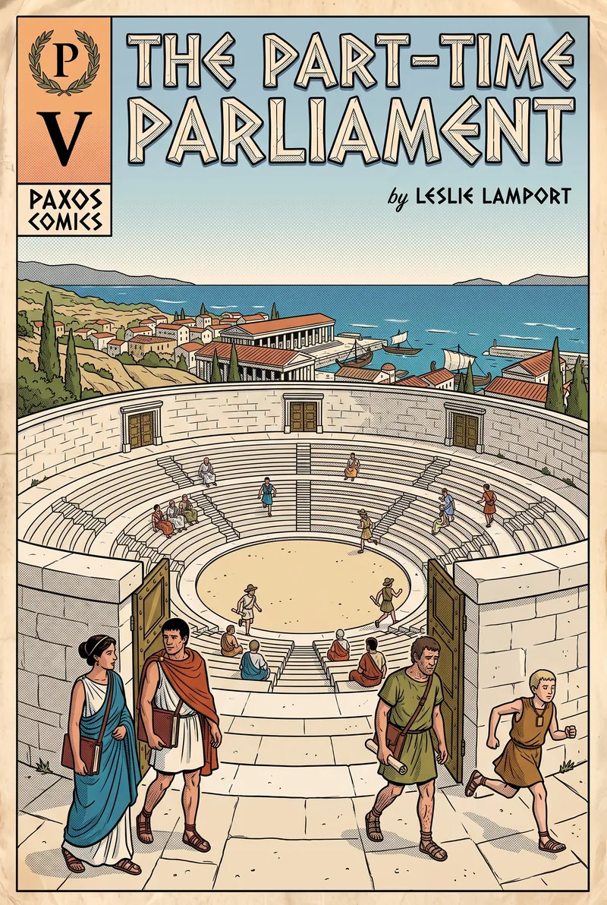
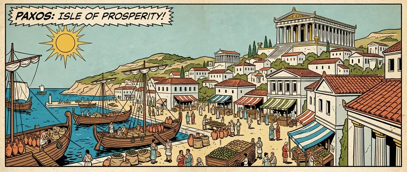
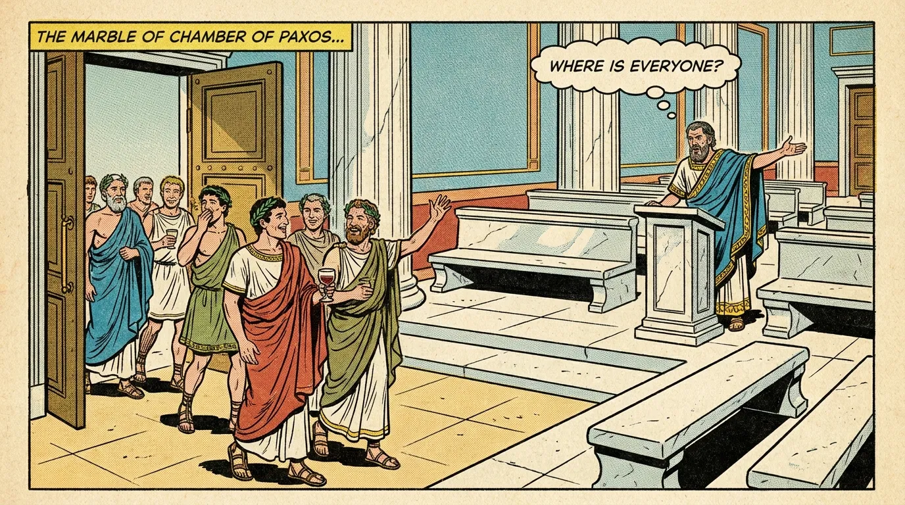
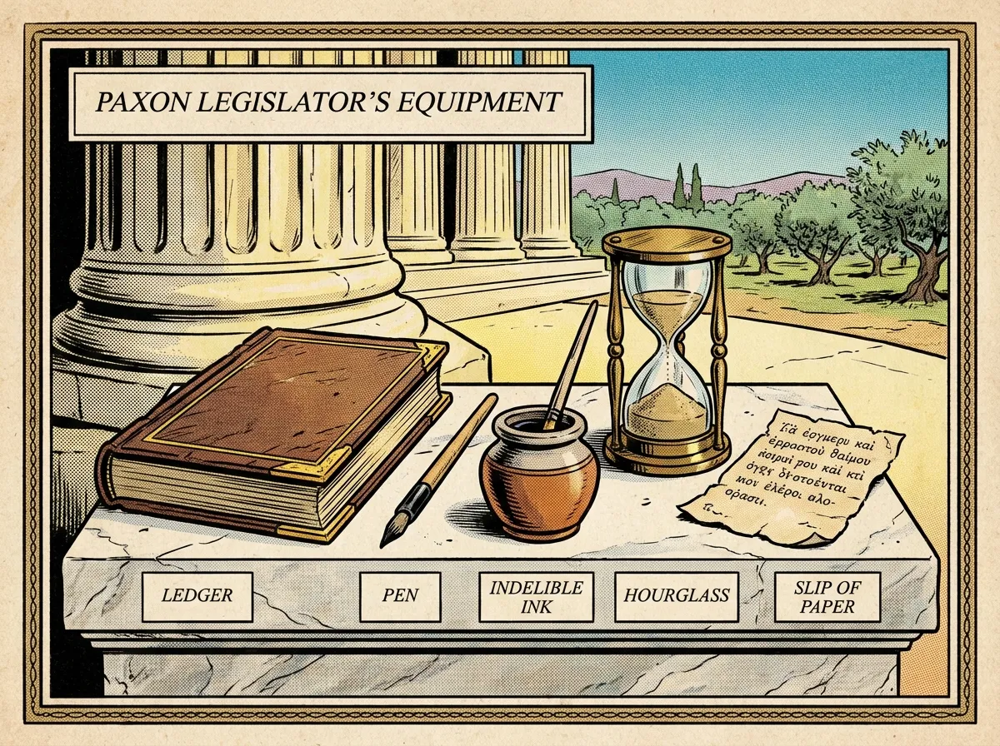
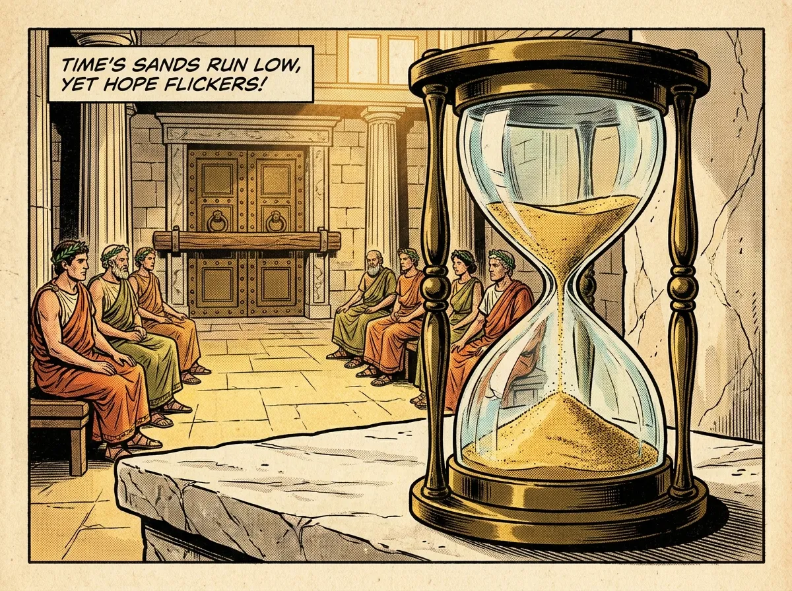
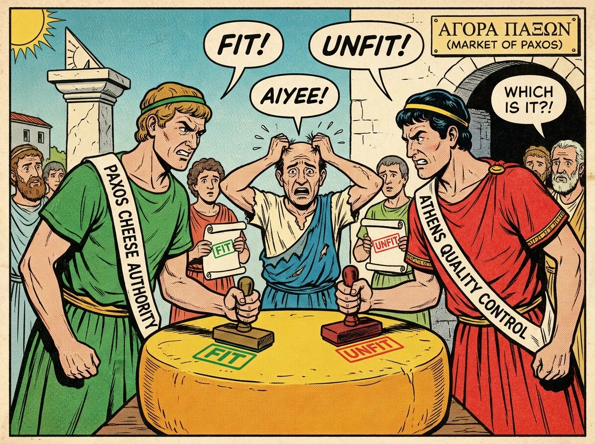

An illustrated chronicle of the Paxon Parliament — the ancient legislative system whose protocol became Paxos, the foundation of modern fault-tolerant distributed computing.
After Leslie Lamport, “The Part-Time Parliament,” ACM Transactions on Computer Systems 16, 2 (May 1998), 133–169. Retold panel by panel, with the mathematics intact.
This manuscript turned up, long forgotten, behind a filing cabinet in the TOCS editorial office. Old as it was, the editor-in-chief judged it worth publishing — and since the author is off doing field work in the Greek isles and cannot be reached, I was asked to prepare it for print.
The author appears to be an archaeologist with only a passing interest in computer science. A pity: obscure as his ancient Paxon civilization may be, its legislative system is a superb model for implementing a distributed system in an asynchronous environment. Some of the Paxons’ refinements appear to be unknown in the systems literature.
The author does briefly discuss the Paxon Parliament’s relevance to distributed computing, in Section 4. Computer scientists may want to read that section first — or even start with Lampson’s explanation of the algorithm for computer scientists [Lampson 1996]. The algorithm is described more formally by De Prisco et al. [1997]. I have added further comments on the relation between the ancient protocols and more recent work at the end of Section 4.
— Keith Marzullo, University of California, San Diego

Wealth brought the Paxons political sophistication, and they traded their old theocracy for a parliamentary government. But on Paxos, commerce came before civic duty: not a single citizen would give his whole life to Parliament. The Paxon Parliament had to keep working even though its legislators drifted endlessly in and out of the parliamentary Chamber.
The trouble of governing with a part-time parliament corresponds remarkably to the trouble faced by today’s fault-tolerant distributed systems: legislators play the role of processes, and leaving the Chamber plays the role of failing. The Paxons’ solution may therefore interest computer scientists. Here follows a short history of the protocol, and an even shorter discussion of its relevance to distributed computing.
Paxon civilization was destroyed by foreign invaders, and archaeologists have only recently begun digging up its history. Our knowledge of the Parliament is therefore fragmentary; the basic protocols are known, but many details are lost. Where such details are interesting, I will take the liberty of speculating on what the Paxons might have done.

Parliament’s primary task was to determine the law of the land, defined by the sequence of decrees it passed. A modern parliament keeps a secretary to record its acts — but no Paxon would sit in the Chamber all session long to play secretary. Instead, every legislator carried a personal ledger, in which he recorded the numbered decrees that were passed. Legislator Λινχ∂’s ledger, for instance, held the entry
if she believed the 155th decree passed by Parliament set the olive tax at 3 drachmas per ton. Ledgers were written with indelible ink, and their entries could not be changed.
The first requirement of the parliamentary protocol was the consistency of ledgers: no two ledgers could contain contradictory information. If legislator Φισ∂ερ had the entry
in his ledger, then no other ledger could hold a different entry for decree 132 — though another legislator’s ledger might simply have no entry for 132 yet, if news of its passage had not reached him.
Consistency alone was not enough: it could be satisfied trivially by leaving every ledger blank forever. Some requirement had to guarantee that decrees eventually got passed and recorded. In modern parliaments, the passing of decrees is slowed by disagreement among legislators; not so on Paxos, where an atmosphere of mutual trust prevailed and legislators would happily pass any decree that was proposed. Their peripatetic propensity, however, posed a real danger. Consistency itself would be lost if one group of legislators passed the decree
…and then strolled off to a banquet, whereupon a wholly different group wandered in and, knowing nothing of what had just happened, passed the conflicting decree…
Progress could not be guaranteed unless enough legislators stayed in the Chamber long enough. Since Paxon legislators refused to curtail their outside activities, no protocol could ensure that any decree would ever be passed. But legislators were willing to promise that, while present in the Chamber, they and their aides would act promptly on all parliamentary business. That promise let the Paxons devise a protocol satisfying the following progress condition:
If a majority of the legislators2 were in the Chamber, and no one entered or left the Chamber for a sufficiently long period of time, then any decree proposed by a legislator in the Chamber would be passed, and every decree that had been passed would appear in the ledger of every legislator in the Chamber.

The protocol’s requirements could be met only by equipping the legislators properly. Each received a sturdy ledger for recording decrees, a pen, and a supply of indelible ink. A legislator might forget what he had been doing if he left the Chamber,3 so he would jot reminders of important parliamentary tasks in the back of his ledger. Decree entries were never changed, but these back-of-ledger notes could be crossed out. To meet the progress condition legislators had to measure the passage of time, so each was given a simple hourglass timer.
Legislators carried their ledgers at all times and could always read the decree list and any un-crossed-out note. The ledgers, made of the finest parchment, were reserved for the most important notes; anything else a legislator would scribble on a slip of paper — which he might (or might not) lose upon leaving the Chamber.
The Chamber’s acoustics were dreadful, making oratory impossible, so legislators could communicate only by messenger, and each had funds to hire as many messengers as needed. A messenger could be trusted not to garble a message — but he might forget he had already delivered it and deliver it again; and, like the legislators he served, he gave only part of his time to parliamentary duties. A messenger might leave the Chamber on some business — perhaps a six-month voyage — before delivering a message. He might even leave forever, in which case the message would never arrive at all.
Though legislators and messengers came and went as they pleased, while inside the Chamber they attended to Parliament with total devotion: messengers delivered promptly, and legislators reacted promptly to every message received.
The official records of Paxos insist that legislators and messengers were scrupulously honest and strictly obeyed the protocol. Most scholars dismiss this as propaganda meant to paint Paxos as morally superior to its eastern neighbors. Dishonesty, though rare, surely occurred — but since it was never admitted in official documents, we know little of how Parliament coped with corrupt legislators or messengers. What evidence has been unearthed is discussed in Section 3.3.5.
The Paxon Parliament evolved from an older, ceremonial Synod of priests, convened every 19 years to choose one symbolic decree. For centuries the Synod used a traditional procedure that required every priest to be present. But as commerce flourished, the priests too began drifting in and out of the Chamber mid-session — until at last the old protocol failed, and a Synod ended with no decree chosen. To prevent a repeat of this theological disaster, Paxon religious leaders asked their mathematicians for a protocol to choose the Synod’s decree. Its requirements and assumptions were essentially those of the later Parliament, except that where the Parliament filled a ledger with a sequence of decrees, a Synod ledger would hold at most one.
The mathematicians derived the Synod protocol in steps. First they proved that a protocol satisfying certain constraints would guarantee consistency and allow progress. A preliminary protocol was derived directly from these constraints; restricting it gave the basic protocol, which guaranteed consistency but not progress; and restricting that yielded the complete Synod protocol, which satisfied both.4
The Synod chose its decree through a series of numbered ballots, each ballot a referendum on one decree. In a ballot, a priest had exactly two choices: vote for the decree, or abstain.5 Each ballot carried a designated set of priests called its quorum; a ballot succeeded if and only if every priest in the quorum voted. Formally, a ballot B had four parts (all sets here are finite sets6):
Bdec — a decree (the one being voted on)
Bqrm — a nonempty set of priests (the ballot’s quorum)
Bvot — a set of priests (the ones who cast votes for the decree)7
Bbal — a ballot number
A ballot B was successful iff Bqrm ⊆ Bvot — a successful ballot being one in which every quorum member voted.
Ballot numbers came from an unbounded, totally ordered set. If B′bal > Bbal, ballot B′ was said to be later than B — but this said nothing about the order in which the ballots were actually conducted; a “later” ballot could well have taken place before an “earlier” one.
The mathematicians then defined three conditions on any set ℬ of ballots, and showed that consistency was guaranteed and progress possible when the conducted ballots satisfied them. The first two are simple:
B1(ℬ) — Each ballot in ℬ has a unique ballot number.
B2(ℬ) — The quorums of any two ballots in ℬ have at least one priest in common.
B3(ℬ) — For every ballot B in ℬ: if any priest in B’s quorum voted in an earlier ballot in ℬ, then the decree of B equals the decree of the latest of those earlier ballots.
The third condition was stated, rather confusingly, in one Paxon manuscript. Interpreting it was made possible by the manuscript reproduced below — study it yourself.
To state B1–B3 formally requires more notation. A vote v was a quantity with three components: a priest vpst, a ballot number vbal, and a decree vdec — the vote cast by priest vpst for decree vdec in ballot number vbal. The Paxons also defined null votes: for each priest p, the unique vote nullp with vbal = −∞ and vdec = blank, where −∞ < b < ∞ for every ballot number b, and blank is not a decree. Votes were totally ordered such that v < v′ whenever vbal < v′bal (the part of the manuscript ordering votes with equal ballot numbers has been lost).
For any set ℬ of ballots, Votes(ℬ) is the set of all votes cast in ballots of ℬ. If p is a priest and b a ballot number or ±∞, then
is the largest vote in Votes(ℬ) cast by p with ballot number less than b — or nullp if there was none. Since nullp is smaller than any real vote, this makes MaxVote(b, p, ℬ) the largest vote in the set
For a nonempty set Q of priests, MaxVote(b, Q, ℬ) is the maximum of MaxVote(b, p, ℬ) over all p in Q. With this, the three conditions become:8
Although MaxVote’s definition leans on the ordering of votes, B1(ℬ) implies MaxVote(b, Q, ℬ)dec does not depend on how votes with equal ballot numbers are ordered.
To show these conditions imply consistency, the Paxons first proved that B1–B3 force any ballot later than a successful one to choose the same decree:
If B1(ℬ), B2(ℬ), and B3(ℬ) hold, then
for any B, B′ in ℬ.
For any B in ℬ, let Ψ(B, ℬ) ≜ {B′ ∈ ℬ : (B′bal > Bbal) ∧ (B′dec ≠ Bdec)} — the later ballots for a different decree. It suffices to show that Bqrm ⊆ Bvot implies Ψ(B, ℬ) is empty. Assume, for contradiction, a B with Bqrm ⊆ Bvot and Ψ(B, ℬ) ≠ ∅.
If B1(ℬ), B2(ℬ), and B3(ℬ) hold, then
for any B, B′ in ℬ — any two successful ballots are for the same decree.
If B′bal = Bbal, then B1 implies B′ = B. Otherwise one of the two is later, and the theorem follows immediately from the Lemma. ∎ END PROOF
Let b be a ballot number and Q a set of priests such that b > Bbal and Q ∩ Bqrm ≠ ∅ for all B ∈ ℬ. If B1(ℬ), B2(ℬ), and B3(ℬ) hold, then there is a ballot B′ with B′bal = b and B′qrm = B′vot = Q such that B1, B2, and B3 all hold for ℬ ∪ {B′} — a new successful ballot can always be added while preserving the conditions.
B1(ℬ ∪ {B′}) follows from B1(ℬ) and the choice of B′bal (larger than every number in use). B2(ℬ ∪ {B′}) follows from B2(ℬ) and the assumption on Q. For B3: if MaxVote(b, Q, ℬ)bal = −∞ then let B′dec be any decree; otherwise let it equal MaxVote(b, Q, ℬ)dec. Then B3(ℬ ∪ {B′}) follows from B3(ℬ). ∎ END PROOF
The preliminary protocol was derived from the requirement that conditions B1(ℬ)–B3(ℬ) stay true, where ℬ is the set of all ballots that had been or were being conducted. The set ℬ itself was never explicitly computed anywhere — the Paxons spoke of ℬ as a quantity observed only by the gods, since it might never be known to any mortal.
Each ballot was initiated by a priest, who chose its number, decree, and quorum; each quorum member then decided whether or not to vote in it. The rules governing those choices came straight from the three conditions:
Maintaining B1 — every ballot needs a unique number. A priest could remember (with back-of-ledger notes) which ballots he himself had initiated, so it sufficed to partition the ballot numbers among the priests. How the Paxons did this is not known; an obvious method is to make each ballot number a pair — an integer and a priest — ordered lexicographically, so that
since Γ came before Λ in the Paxon alphabet. In any case, every priest owned an unbounded set of ballot numbers reserved for him alone.
Maintaining B2 — a ballot’s quorum was chosen to contain a μαδζ∂ωριτϊσετ of priests. At first this meant a simple majority. Later it was observed that fat priests were less mobile and lingered longer in the Chamber, so a μαδζ∂ωριτϊσετ was redefined as any set of priests whose total weight exceeded half the total weight of all priests. When a bloc of thin priests protested, actual weights gave way to symbolic weights based on attendance records. The one property that mattered: any two majority sets have at least one priest in common. So the initiating priest chose Bqrm to be a majority set.
Maintaining B3 — before initiating a ballot with number b and quorum Q, priest p had to learn MaxVote(b, q, ℬ) for every priest q in Q — obtained by an exchange of messages. If MaxVote(b, Q, ℬ)dec was not blank, the ballot was compelled to carry that decree; only if it was blank could the ballot carry any decree. Hence the first two steps of conducting a ballot, initiated by p:10
When q sends LastVote(b, v), the vote v equals MaxVote(b, q, ℬ) — but ℬ keeps growing as new ballots start and new votes are cast. Since p will use v when choosing his decree, B3 demands that MaxVote(b, q, ℬ) not change afterward. So by sending LastVote(b, v), priest q makes a promise: he will cast no new vote in any ballot numbered between vbal and b. (To keep the promise, he must record it in his ledger.)
Step 3 adds a ballot B to ℬ — with Bbal = b, Bqrm = Q, Bvot = ∅ (no one has voted yet), and Bdec = d. In step 4, a priest deciding to vote adds himself to Bvot.
Crucially, every step of the protocol is optional. A priest may ignore a NextBallot message; he may decline to vote in step 4 even if no promise forbids it. Skipping an action can stall progress, but it can never cause inconsistency, because it cannot make B1–B3 false. And since losing a message only prevents actions, message loss cannot hurt consistency either. Consistency survives priests wandering off and scrolls sinking with their ships.
Duplicated messages are equally harmless: receiving a message twice can only cause an action to be repeated, and every action except step 3 is idempotent — sending several Voted(b, q) messages is no different from sending one. Step 3’s repetition is prevented by the note made in the back of the ledger when it executes.
In step 3, when the decree d is dictated by B3, it may well already be written in the ledger of some priest — a priest who need not even be in the quorum Q, having long since left the Chamber. This is why step 3 permits no greater freedom in choosing d: consistency itself is at stake.
The preliminary protocol asks a priest to record (i) every ballot he has initiated, (ii) every vote he has cast, and (iii) every LastVote message he has sent. Too much bookkeeping for busy priests! The Paxons therefore restricted it to obtain the more practical basic protocol, in which priest p keeps only three items in the back of his ledger:
lastTried[p] — the number of the last ballot p tried to initiate, or −∞ if none.
prevVote[p] — the vote cast by p in the highest-numbered ballot in which he voted, or −∞ if he never voted.
nextBal[p] — the largest b for which p has sent a LastVote(b, v) message, or −∞ if he never has.
In the basic protocol, p conducts only one ballot at a time — ballot lastTried[p] — and ignores messages about any other ballot he initiated. All bookkeeping for the ballot in progress lives on a slip of paper; if the slip is lost, the ballot is simply abandoned.
In the preliminary protocol, LastVote(b, v) promised only: no new vote between vbal and b. In the basic protocol it makes the stronger promise: no new vote in any ballot numbered below b at all. This may block a vote the preliminary protocol would have allowed — but since every action was optional anyway, the basic protocol never does anything the preliminary protocol forbids, and thus inherits its consistency.
The derivation from B1–B3 made it obvious that the basic protocol is consistent. But some similarly “obvious” ancient wisdom had turned out to be false, and skeptical citizens demanded a rigorous proof. The Paxon mathematicians’ proof is reproduced in the appendix. Like the preliminary protocol, the basic protocol never requires anyone to do anything — so it says nothing about progress.
The basic protocol maintains consistency but only says what a priest may do; it never requires action. The complete protocol keeps the same six steps and adds the obvious requirement that priests perform steps 2–6 as soon as possible. But someone must also be required to perform step 1 — to initiate ballots — and the key to the complete protocol lay in deciding when.
Never initiating a ballot obviously prevents progress. Less obviously, initiating too many does too: a new ballot with a bigger number b extracts, via step 2, promises that block voting in every previously initiated ballot. If eager priests keep starting higher-numbered ballots before the previous ones can finish, no ballot ever succeeds. (Try Legend Ⅲ in the Chamber above.)
Progress requires ballots to keep being initiated until one succeeds — but not too frequently. To calibrate this, the Paxons measured their world. A messenger who did not leave the Chamber always delivered a message within 4 minutes; a priest who stayed put always acted within 7 minutes.11 So if p and q were both in the Chamber, an event causing p to message q, who replies at once, would produce that reply within 22 minutes — if neither messenger wandered off. (Send within 7, deliver within 4, respond within 7, return within 4.)
Suppose a single priest p was initiating ballots, sending step-1 messages to every priest. If he began a ballot while a majority sat in the Chamber, he could expect to execute step 3 within 22 minutes of starting, and step 5 within another 22. If either deadline passed without result, then either some priest or messenger had left the Chamber — or a larger-numbered ballot, started earlier by another priest, was blocking his. To handle the latter case, the protocol was extended: a priest receiving a NextBallot(b) or BeginBallot(b, d) with b < nextBal[q] replied with nextBal[q], prompting p to try again with a bigger number.
If p initiated a new ballot exactly when (i) 22 minutes passed without completing step 3 or 5, or (ii) he learned of a higher-numbered ballot — then, were the Chamber doors barred with p and a majority inside, a decree would be passed and recorded in every present priest’s ledger within 99 minutes. (Up to 22 minutes to start the next ballot, 22 to learn a bigger ballot number was loose, then 55 to run steps 1–6 of a successful ballot.) The progress condition would thus be met if a single priest, staying in the Chamber, was the one initiating ballots.

The complete protocol therefore included a procedure to choose a single priest — the president — to initiate ballots. In most governments choosing a president is hard, because most governments insist on having exactly one at a time. In the United States, for instance, chaos would ensue if some believed Bush had been elected president while others believed Dukakis had — one might sign a bill into law as the other vetoed it. But in the Paxon Synod, multiple presidents could only slow things down; they could never corrupt a ledger. The president-selection method needed only this presidential selection requirement:
If no one entered or left the Chamber, then after T minutes exactly one priest in the Chamber would consider himself to be the president.
Given this, the complete protocol had the property that if a majority set was in the Chamber and no one entered or left for T + 99 minutes, every priest present would end the period with the decree in his ledger.
The Paxons made president the priest whose name was last in alphabetical order among those in the Chamber — though we don’t know exactly how. The requirement would be satisfied if, say, every priest in the Chamber sent his name to every other at least once each T − 11 minutes, and a priest considered himself president iff he received no message from a “higher-named” priest for T minutes.
Thus the complete Synod protocol = the basic protocol + prompt execution of steps 2–6 + a presidential selection method + the president initiating ballots at the right moments. Many details are lost; the methods above for choosing a president and timing ballots are surely not the ones Paxos really used. The rules given here even make the president keep initiating ballots after a decree is chosen — so that late-arriving priests learn of it — though better ways surely existed. Each priest probably also sent the president his lastTried[p] during selection, letting the new president pick a large-enough ballot number on his first try.
The Paxons understood that any protocol achieving progress must measure the passage of time.12 The protocols above are easily written as precise algorithms with timers and time-outs — assuming perfectly accurate timers; a closer analysis shows timers with a known bound on accuracy suffice, and the skilled glass blowers of Paxos had no difficulty producing suitable hourglasses.
Given the sophistication of Paxon mathematicians, it is widely believed they found an optimal algorithm for the presidential selection requirement. We can only hope this algorithm will be discovered in future excavations on Paxos.
When Parliament was established, its protocol was derived from the Synod protocol. Instead of choosing one decree, the Parliament had to pass a series of numbered decrees. As in the Synod, a president was elected; anyone wanting a decree passed would tell the president, who assigned it a number and attempted to pass it. Logically, Parliament ran a separate instance of the complete Synod protocol for every decree number — but with a single president elected for all instances at once, performing the first two steps of the protocol just once.
The key observation: in the Synod protocol, the president does not choose the decree or the quorum until step 3. So a newly elected president p can send a single message serving as the NextBallot(b) message of all instances — one per decree number, infinitely many. A legislator q can reply with a single message serving as the LastVote messages of all instances; it carries only a finite amount of information, since q can have voted in only finitely many instances.
Once the new president hears from a majority set, he is ready to perform step 3 in every instance. For some finite number of instances (decree numbers), condition B3 forces a decree upon him — he performs step 3 for each of those immediately, trying to pass those forced decrees. Thereafter, whenever a citizen asks him to pass a decree, he picks the lowest-numbered decree he is still free to choose and runs step 3 of that instance for it.
Two refinements led to the actual Paxon Parliament’s protocol:
Skip what is already known. There is no reason to run the Synod protocol for a decree number whose outcome is already written down. So a newly elected president p, whose ledger already holds all decrees numbered up through n, sends a NextBallot(b, n) message that acts as a NextBallot(b) in all instances for decree numbers above n. In his reply, legislator q informs p of every decree above n already in q’s ledger (besides the usual LastVote information for decrees not in his ledger), and asks p to send him any decrees numbered ≤ n that he is missing.
Fill the gaps. Suppose decrees 125 and 126 are introduced late on a Friday afternoon; 126 is passed and written in a ledger or two, 125 gets nowhere — and everyone goes home for the weekend. Monday morning, Δφωρκ is elected the new president. She learns of decree 126, but nothing of 125: the old president and everyone who voted for it are still out of the Chamber. Her ledger has a gap. Passing an important new decree as number 125 would make it appear earlier in the books than decree 126, passed the week before — possibly confusing citizens who had acted on knowledge of 126. Instead, Δφωρκ fills the gap with the traditional do-nothing decree:
In general, a new president filled every gap in his ledger by attempting to pass the “olive-day” decree — a decree that made absolutely no difference to anyone in Paxos.
The consistency and progress of the parliamentary protocol follow immediately from those of the Synod protocol it was built on. To our knowledge, the Paxons never bothered writing a precise description of the parliamentary protocol — it was so easily derived from the Synod protocol.
Balloting could run concurrently for many decree numbers, with ballots initiated by different legislators — each believing himself president. We cannot say precisely in what order decrees were passed, especially without knowing how presidents were selected. But one ordering property can be deduced.
A decree was proposed when the president chose it in step 3 of its instance; it was passed when first written in a ledger. Before proposing any new decree, a president had to learn from a majority set what decrees they had voted for — and any decree already passed had been voted for by at least one member of every majority set. So a president learned of all previously passed decrees before proposing a new one. He would not fill a gap with an important decree (only with olive-day decrees), and he would not propose decrees out of order — hence the decree-ordering property:
If decrees A and B are important and decree A was passed before decree B was proposed, then A has a lower decree number than B.
Whatever the mysteries of choosing a president, we know exactly how Parliament ran once a president was in place and no one was entering or leaving. On receiving a request to pass a decree — from a citizen directly, or relayed by another legislator — the president assigned it a number and passed it with this exchange (numbers refer to Synod-protocol steps):
That is three message delays and about 3N messages, for a parliament of N legislators and a quorum of about N/2. And when Parliament was busy, the president would combine the BeginBallot for one decree with the Success for a previous one — only 2N messages per decree.
Governing the island turned out to be more complicated than the Paxons expected, and a series of problems forced changes to the protocol. The most important are described below.
The president was originally chosen the Synod way — pure alphabetical order. Thus when legislator Ωκι returned from a six-month vacation, he was instantly made president — knowing nothing of what had happened in his absence. Parliamentary business stopped dead while Ωκι, a slow writer, laboriously copied six months of decrees to bring his ledger up to date.
The incident sparked a debate on presidential selection. Some urged that once a legislator became president, he should stay president until he left the Chamber. An influential bloc of citizens wanted the richest legislator in the Chamber as president, since he could hire scribes and servants to help with presidential duties — arguing that once a rich legislator had caught his ledger up, there was no reason not to let him assume the presidency. Others countered that the most upstanding citizen should preside, regardless of wealth — “upstanding” presumably meaning less likely to be dishonest, though no Paxon would publicly admit official malfeasance was possible. The outcome of the debate is unknown; no record survives of the presidential selection protocol ultimately used.
As the years passed and decrees accumulated, finding the current olive tax — or what color goat could legally be sold — meant poring over an ever longer list. A legislator returning from a long voyage faced a mountain of copying. Eventually legislators converted their ledgers from decree lists into law books holding just the current state of the law, annotated with the number of the last decree reflected in that state.
To learn the olive tax one now looked in the law book under “taxes.” If a legislator’s law book was complete through decree 1298 and he learned decree 1299 set the olive tax to 6 drachmas per ton, he simply updated the olive-tax entry and noted his book was complete through 1299. If he then learned of decree 1302, he would hold it in the back of the ledger until 1300 and 1301 arrived, and only then incorporate it.
To let a briefly absent legislator catch up without copying an entire law book, legislators also kept the past week’s decrees in the back of the book. They could have kept this list on a slip of paper, but it proved convenient to enter decrees in the back of the ledger as they passed and update the law book only two or three times a week.

As Paxos prospered, legislators grew too busy for the details of government, and a bureaucracy was established: instead of decreeing whether each lot of cheese was fit for sale, Parliament passed a decree appointing a cheese inspector to decide.
Selecting bureaucrats proved trickier than expected. Parliament made Δίκστρα the first cheese inspector. Months later, merchants complained he was too strict, rejecting perfectly good cheese, and Parliament replaced him by passing
But Δίκστρα paid no attention to what Parliament did, so he did not learn of the decree right away — and for a while both Δίκστρα and Γωυδα inspected cheese, issuing conflicting rulings. To prevent such confusion, the Paxons had to guarantee that a position was held by at most one bureaucrat at a time. The solution: the president stamped each decree with the time and date it was proposed. A decree appointing Δίκστρα might read
declaring his term to begin at 8:30 on 15 January or when the previous inspector’s term ended, whichever came later — and to end at 8:30 on 15 March, unless he resigned earlier by having the president pass a decree such as
Terms were kept short so a bureaucrat who left the island could be replaced quickly; Parliament simply extended the term of anyone doing a satisfactory job. A bureaucrat needed to tell time to know if he currently held his post. Mechanical clocks were unknown on Paxos, but Paxons could read the sun or the stars to within 15 minutes.13 If Δίκστρα’s term began at 8:30, he would not start inspecting cheese until his celestial observations showed 8:45.
This scheme plainly works if higher-numbered decrees always carry later proposal times. But what if Parliament passed
— proposal times running backward, courtesy of two legislators who each thought he was president? Such inversions are impossible, because the protocol satisfies this property:
If two decrees are passed by different presidents, then one of the presidents proposed his decree after learning that the other decree had been proposed.
Suppose ballot b was successful for decree D, ballot b′ for decree D′, with b < b′. Since both succeeded, some legislator q voted in both. The balloting for D′ began with a NextBallot(b′, n) message. If its sender did not already know of D, then n is smaller than D’s decree number — and q’s reply to that NextBallot must state that he voted for D. Either way, D′’s president learned of D before proposing D′. ∎
Citizens, not just legislators, needed to learn the law. At first the Paxons assumed a citizen could simply read any legislator’s ledger — until this incident. For centuries it had been legal to sell only white goats. A farmer named Δωλεφ got Parliament to pass the decree
and told his goatherd to sell some black goats to a merchant named Σκεεν. A law-abiding man, Σκεεν asked legislator Σπωκμεϊρ whether the sale would be legal. But Σπωκμεϊρ had been away from the Chamber and his ledger stopped short of decree 77 — so he advised that the sale would be illegal, and Σκεεν refused the goats.
The incident led to the monotonicity condition on inquiries about the law:
If one inquiry precedes a second inquiry, then the second inquiry cannot reveal an earlier state of the law than the first.
(If a citizen learns a decree has passed, acquiring that knowledge counts as an implicit inquiry.) The interpretation of this condition evolved over the years — three times:
First interpretation: pass a decree per inquiry. If Σ∂νϊδερ wanted to know the current olive tax, he had Parliament pass
then read any ledger complete through decree 86. If citizen Γρεες inquired afterward, his inquiry-decree was proposed after 87 had passed, so by the decree-ordering property it got a number above 87 — Γρεες could not see an older olive tax than Σ∂νϊδερ. This satisfies monotonicity when precedes means “finished before the other began.” But a decree per inquiry proved far too cumbersome.
Second interpretation: causality and decree numbers. The Paxons weakened precedes: inquiry A precedes inquiry B only if A happened earlier and could causally affect B. This still prevents the black-goat fiasco — a causal chain runs from farmer Δωλεφ’s implicit inquiry to merchant Σκεεν’s. The weaker condition was met by quoting decree numbers in all business transactions. Farmer Δωλεφ, whose flock had grown colorful, got Parliament to pass
and, selling brown goats to Σκεεν, declared the sale legal as of decree 277. Σκεεν then asked legislator Σπωκμεϊρ whether the sale was legal under the law through at least decree 277. If Σπωκμεϊρ’s ledger fell short, he would wait for it to catch up — or tell Σκεεν to ask someone else. If his ledger ran through decree 298, he would answer that the sale was legal as of 298, and Σκεεν would carry the number 298 into his next transaction or inquiry.
Third interpretation: one specialist per area. Ordinary citizens disliked remembering decree numbers, so the Paxons re-read the condition once more — this time reinterpreting the state of the law. The law was divided into areas, and a legislator was chosen as specialist for each; the current state of each area was defined to be whatever that specialist’s ledger said. If decree 1517 changed tariff law and 1518 changed tax law, the tax law could genuinely change first — if the tax specialist learned of both decrees before the tariff specialist learned of either — a state of the law unobtainable by enacting the decrees in numerical order, yet now perfectly lawful.
To avoid conflicting definitions of the current state, at most one specialist at a time was allowed per area — enforced by the same time-stamped-term method used for bureaucrats (Section 3.3.3). An inquiry touching a single area went to that area’s specialist, who answered from his ledger. Since learning that a law had passed was itself an implicit inquiry, a decree was required to change at most one area, and news of its passage could come only from that area’s specialist.
Inquiries spanning areas were handled by cooperation. When merchant Λισκωφ asked whether the tariff on an imported golden fleece exceeded the sales tax on a local one, the tax specialist could answer by first asking the tariff specialist for the fleece tariff — valid so long as he made no changes to his own ledger before the reply came back. This worked until sweeping changes across several areas of the law were needed at once. Then the Paxons realized the real requirement was not that a decree affect a single area, but that every area it affects have the same specialist: Parliament could change several areas with one decree by first appointing one legislator specialist for all of them. Moreover the same area could have several specialists, provided that area of the law was not allowed to change — just before income taxes came due, Parliament would appoint a seasonal flood of tax-law specialists to answer everyone’s questions.
Whatever the official assertions, there must have been a few dishonest legislators in the history of Paxos; when caught, they were probably exiled. By sending contradictory messages, a malicious legislator could drive different ledgers into inconsistency — as could a simple lapse of memory by an honest legislator or messenger.
Recognized inconsistencies were easy to repair by decree: disagreement over the olive tax could be ended by passing a fresh decree fixing the tax at a definite value. The hard problem was correcting inconsistent ledgers when no one knew they were inconsistent. Its solution can be inferred from the redundant decrees that begin appearing in ledgers some years into Parliament’s history — for example
passed although decree 2155 had already set the olive tax to 9 drachmas per ton and nothing in between had changed it. Parliament apparently cycled through its entire body of law every six months, so that even if ledgers started out inconsistent, all legislators would agree on the current law of the land within six months. It is believed that with these redundant decrees the Paxons made their Parliament self-stabilizing. (Self-stabilizing is a modern term due to Dijkstra [1974].)
Precisely what self-stabilization meant in a Parliament of legislators forever coming and going is unclear. The Paxons would not have accepted a definition requiring every legislator to be in the Chamber at once before consistency could be guaranteed. But achieving consistency did require that if one legislator had a ledger entry for some decree number and another did not, the second would eventually fill it in. Exactly what self-stabilization property the Parliament possessed, and how it was achieved, we do not know. Paxon mathematicians surely addressed the problem, but their work has not yet been found. One hopes that future archaeological expeditions to Paxos will give the search for manuscripts on self-stabilization the highest priority.
At first, membership in Parliament was hereditary, passed from parent to child. When elder statesman Παρνας retired, he handed his ledger to his son, who carried on without interruption; the other legislators neither knew nor cared which Παρνας they were corresponding with.
As old families emigrated and new ones arrived, the Paxons decided to add and remove members of Parliament by decree. This posed a circularity: membership was determined by which decrees were passed, but passing a decree required knowing what a majority set was — which depended on the membership. The circle was broken by letting the membership used in passing decree n be specified by the law as of decree n − 3. A president could not try to pass decree 3255 until he knew all decrees through 3252. In practice, after passing
the president would immediately pass olive-day decrees as 3253 and 3254.
Changing Parliament’s composition this way was dangerous, and had to be done with care. The consistency and progress conditions would always hold — but the progress condition only promises progress when a majority set is in the Chamber, and it does not promise that a majority set will ever exist. Indeed, this very mechanism brought the parliamentary system of Paxos down. Because of a scribe’s error, a decree meant to honor sailors who had drowned in a shipwreck instead declared the drowned sailors to be the only members of Parliament. Its passage made the passing of any further decree impossible — including the decrees proposed to correct the mistake. Government on Paxos came to a halt. A general named Λαμπσων seized the moment to stage a coup, establishing a military dictatorship that ended centuries of progressive government. Paxos grew weak under a series of corrupt dictators, and proved unable to repel the invasion from the east that destroyed its civilization.
Paxos’s Parliament was destroyed many centuries ago, but its protocol remains useful. Consider a simple distributed database, used perhaps as a name server. Its state assigns values to names; copies of the database live on multiple servers. A client may ask any server to read or change a name’s value, and there are two kinds of read: a slow read, which returns the value currently assigned, and a fast read, which is quicker but may miss a recent change. The correspondence with the Paxon Parliament is immediate:
| Parliament | Distributed Database |
|---|---|
| legislator | ↔ server |
| citizen | ↔ client program |
| current law | ↔ database state |
A client’s request to change a value is performed by passing a decree; a slow read likewise passes a decree, exactly as in Section 3.3.4; a fast read simply reads the server’s current copy. The Paxon Parliament protocol thus provides a distributed, fault-tolerant implementation of the database.
This is an instance of the state machine approach, first proposed in [Lamport 1978]. One defines a state machine — a set of states, a set of commands, a set of responses, and a function assigning a response/state pair to every command/state pair. Intuitively, a state machine executes a command by producing a response and a new state, both determined by the command and the current state. For the database, a state-machine state is just a database state, and the commands are:
| command: | read(name, client) | update(name, val, client) |
| response: | (client, value of name) | (client, “ok”) |
| new state: | same as current state | same, except value of name changed to val |
In the state-machine approach, a network of servers transforms client requests into state-machine commands, executes the commands, and turns the responses into replies to clients. A general algorithm ensures all servers obtain the same sequence of commands — so, starting from the same initial state, they produce the same sequence of responses and state changes. In the database example, a slow read or an update becomes a read or update command; the server that received the request sends the reply. All servers hold consistent copies — though at any moment some may hold earlier versions than others, since commands need not execute everywhere simultaneously; a server answers fast reads from its current version, without a command.
The beauty of the approach: the system’s functionality lives entirely in the state machine — a mere function from command/state pairs to response/state pairs — while synchronization and fault tolerance live in the general algorithm that distributes the commands. Designing a new system means designing only a new state machine; the command-distribution algorithm is standard and already proved correct. Functions are far easier to design, and to get right, than distributed algorithms.
The first algorithm for implementing an arbitrary state machine appeared in [Lamport 1978]; later algorithms tolerate up to any fixed number f of arbitrary failures.14 Those algorithms guarantee that if fewer than f processes fail, commands execute within a fixed time — suitable for real-time applications — but if more than f failures occur, servers may become inconsistent; and since two servers unable to communicate are equivalent to one of them having failed, a low probability of losing consistency demands a large f, hence great cost in redundant hardware, bandwidth, and response time.
The Paxon Parliament offers another way. The legislators’ law book corresponds to the machine state; passing a decree corresponds to executing a command. The resulting algorithm is less robust and less expensive: it tolerates neither malicious failures nor guarantees bounded-time response — but consistency survives the benign failure of any number of processes and communication paths. The Paxon algorithm suits systems with modest reliability requirements that do not justify an extremely fault-tolerant, real-time implementation.
With bounded-time algorithms, time can be made part of the state, and machine actions can be triggered by the passage of time — say, automatically revoking a client’s ownership of a resource held too long. The Paxon algorithm permits no such thing: under failures, passing a decree can take arbitrarily long, and one command can be executed (appear earlier in the decree sequence) than another issued before it. Yet a state machine can still use real time the way the Parliament did — the cheese-inspector method of Section 3.3.3 serves perfectly well for deciding who currently owns a resource.
The Paxon Synod protocol resembles standard three-phase commit protocols [Bernstein et al. 1987; Skeen 1982]. A Paxon ballot and a three-phase commit both exchange five messages between a coordinator (the president) and the other quorum members (legislators). A commit protocol chooses between exactly two values — commit or abort — while the Synod protocol chooses an arbitrary decree. To convert a commit protocol into a Synod protocol, one sends the decree in the initial round of messages: a commit decision then means the decree was passed, an abort decision means the “olive-day” decree was passed.
The Synod protocol differs in not sending the decree until the second phase — which is precisely what lets the parliamentary protocol execute the first phase just once for all decrees, so that passing each individual decree costs only three messages… err, three message delays and the 2N–3N messages of Section 3.2.2.
The theorems underlying the Synod protocol are similar to results of Dwork, Lynch, and Stockmeyer [1988] — though their algorithms run ballots sequentially in separate rounds, and seem unrelated to the Synod protocol itself.
Much has happened in the field since this article was written. The state-machine approach is surveyed by Schneider [1990]. The recovery protocol of Keidar and Dolev [1996] and the totally-ordered broadcast algorithm of Fekete et al. [1997] are quite similar to the Paxon protocol described here. The author was also apparently unaware that the view management protocol of Oki and Liskov [1988] seems to be equivalent to the Paxon protocol.
Many of the refinements presented in this submission also appeared in contemporary or subsequent literature: the delegation method of Section 3.3.3 closely resembles the leases mechanism of Gray and Cheriton [1989]; the decree-numbering technique by which Section 3.3.4 achieves monotonicity is described by Ladin et al. [1992]; and the technique of Section 3.3.6 for adding new legislators was also given by Schneider [1990].
— K. M.
Daniel Duchamp pointed out to the author the need for a new state-machine implementation. Discussions with Martín Abadi, Andy Hisgen, Tim Mann, and Garret Swart led him to Paxos. Λεωνίδας Γκίμπας provided invaluable assistance with the Paxon dialect.
Here is the Synod’s basic protocol of Section 2.3, restated in modern algorithmic notation. First, the variables a priest p keeps in his ledger (for convenience, prevVote[p] is split into components prevBal[p] and prevDec[p]):
outcome[p] — the decree written in p’s ledger, or blank if nothing is written yet.
lastTried[p] — the number of the last ballot p tried to begin, or −∞.
prevBal[p] — the number of the last ballot in which p voted, or −∞.
prevDec[p] — the decree for which p last voted, or blank.
nextBal[p] — the number of the last ballot in which p agreed to participate, or −∞.
status[p] — one of idle (not conducting or trying to begin a ballot), trying (trying to begin ballot lastTried[p]), or polling (now conducting ballot lastTried[p]). If the slip is lost, status[p] is taken to equal idle and the remaining variables are irrelevant.
prevVotes[p] — the set of votes received in LastVote messages for the current ballot.
quorum[p] — if polling, the quorum of the current ballot; else meaningless.
voters[p] — if polling, the quorum members from whom p has received Voted messages; else meaningless.
decree[p] — if polling, the current ballot’s decree; else meaningless.
There is also the history variable ℬ — the set of ballots started, with their progress (who has cast votes). A history variable is used in developing and proving the algorithm but is not actually implemented. Recall too that ballot numbers were partitioned among the priests: owner(b) is the priest allowed to use ballot number b.
Priest p’s actions are atomic — once begun, an action completes before p begins another. Each action has an enabling condition and a list of effects; receive-actions are enabled whenever a messenger arrives with the right message; each action sends at most one message. These are allowed actions — the protocol never requires a priest to do anything, and no attempt is made at efficiency: the actions cheerfully let p do silly things, like sending another BeginBallot to a priest who has already answered with a LastVote.
Try New Ballot — always enabled.
· Set lastTried[p] to any ballot number b greater than its
previous value, with owner(b) = p.
· Set status[p] to trying.
· Set prevVotes[p] to ∅.
Send NextBallot Message — enabled whenever status[p] = trying.
· Send NextBallot(lastTried[p]) to any priest.
Receive NextBallot(b) Message — if b ≥ nextBal[p]:
· Set nextBal[p] to b.
Send LastVote Message — enabled whenever nextBal[p] > prevBal[p].
· Send LastVote(nextBal[p], v) to priest
owner(nextBal[p]), where
vpst = p,
vbal = prevBal[p], and
vdec = prevDec[p].
Receive LastVote(b, v) Message — if b = lastTried[p] and
status[p] = trying:
· Set prevVotes[p] to the union of its former value and
{v}.
Start Polling Majority Set Q — enabled when status[p] = trying and
Q ⊆ {vpst : v ∈ prevVotes[p]}, where Q is a majority
set:
· Set status[p] to polling, quorum[p] to
Q, voters[p] to ∅.
· Set decree[p] to a decree d chosen as follows: let
v be the maximum element of prevVotes[p]; if
vbal ≠ −∞ then d = vdec,
else d may equal any decree.
· Add to ℬ the ballot B with
Bdec = d,
Bqrm = Q,
Bvot = ∅,
Bbal = lastTried[p].
Send BeginBallot Message — enabled when status[p] = polling:
· Send BeginBallot(lastTried[p], decree[p])
to any priest in quorum[p].
Receive BeginBallot(b, d) Message — if b = nextBal[p] > prevBal[p]:
· Set prevBal[p] to b, prevDec[p] to
d.
· In ℬ, add p to Bvot for the (unique) ballot
B with Bbal = b.
Send Voted Message — enabled whenever prevBal[p] ≠ −∞:
· Send Voted(prevBal[p], p) to
owner(prevBal[p]).
Receive Voted(b, q) Message — if b = lastTried[p] and
status[p] = polling:
· Set voters[p] to the union of its former value and {q}.
Succeed — enabled whenever status[p] = polling,
quorum[p] ⊆ voters[p], and outcome[p] = blank:
· Set outcome[p] to decree[p].
Send Success Message — enabled whenever outcome[p] ≠ blank:
· Send Success(outcome[p]) to any priest.
Receive Success(d) Message — if outcome[p] = blank:
· Set outcome[p] to d.
Is this abstract algorithm a fair model of what real priests did? A priest could perform three kinds of action “atomically”: receive a message, write a note or ledger entry, and send a message. Each is one action of the algorithm — except that Receive actions both receive a message and set a variable. We may pretend a message was received only when the priest acted on it; if he left the Chamber first, we pretend it was never received. Since the pretense cannot affect consistency, the consistency of the basic Synod protocol follows from the consistency of the algorithm.
Consistency means: whenever outcome[p] and outcome[q] are both different from blank, they are equal. A rigorous proof needs a complete description of the algorithm; the description above is almost complete. Missing is a variable ℳ whose value is the multiset15 of messages in transit — each Send adds a message to ℳ, each Receive removes one — together with actions for the loss and duplication of messages, and a Forget action representing a priest losing his slip of paper.
With these additions, each change of state corresponds to one allowed action. The Paxons proved correctness by exhibiting a predicate I such that: (1) I is true initially; (2) I implies the correctness condition; and (3) every allowed action leaves I true. The predicate was a conjunction I1 ∧ … ∧ I7, where I1–I5 were in turn conjunctions of I1(p)–I5(p) over all priests p. Each conjunct constrains one variable (bracketed below).
That I holds initially is checked conjunct by conjunct from the variables’ initial values. That I implies consistency follows from I1, the first conjunct of I6, and Theorem 1: any two non-blank outcomes are decrees of successful ballots in ℬ, which Theorem 1 makes equal. The hard part is showing every action preserves each conjunct:
I1(p) — ℬ changes only by adding a ballot or adding a voter, neither of which can falsify it. outcome[p] changes only via Succeed (whose enabling condition plus I5(p) preserve I1) and Receive Success (preserved by the enabling condition, I1(q) for the sender, and the last conjunct of I7).
I2(p) — depends only on lastTried[p], status[p], ℬ. Only Try New Ballot changes lastTried[p] (increasing it to a number owned by p) and only it sets status to trying; a new ballot enters ℬ only by Start Polling, whose specification plus the first conjunct keep the second true.
I3(p) — votes are never removed from ℬ, so MaxVote(∞, p, ℬ) changes only when p casts a new vote — only by Receive BeginBallot, which is exactly the action updating prevBal and prevDec; B1 (from I6) makes the voted ballot unique, and nextBal is never decreased.
I4(p) — Try New Ballot empties prevVotes[p], making it vacuously true; Receive LastVote preserves it via the LastVote conjunct of I7; a vote by vpst below lastTried[p] is impossible because nextBal[vpst] ≥ lastTried[p].
I5(p) — established by Start Polling (which adds the very ballot the conjunct asserts to exist) and preserved by Receive Voted via the Voted conjunct of I7 and B1.
I6 — since Bbal and Bqrm never change, only adding a ballot (Start Polling, safe by I2 and the majority-set assertion) or adding a vote (Receive BeginBallot, safe by I3(p) and I4(p)) could falsify B1–B3 — and neither does.
I7 — since lastTried and nextBal never decrease and a non-blank outcome never changes, only sending messages or casting votes could falsify it, and each of the five message types satisfies its conjunct when sent — NextBallot by I2(p), LastVote by I3(p), BeginBallot by I5(p), Voted by I3(p), and Success by its enabling condition. ∎
Received January 1990 · Accepted March 1998
(Yes, really. The paper spent eight years in review — the
editors kept insisting the author was joking.)